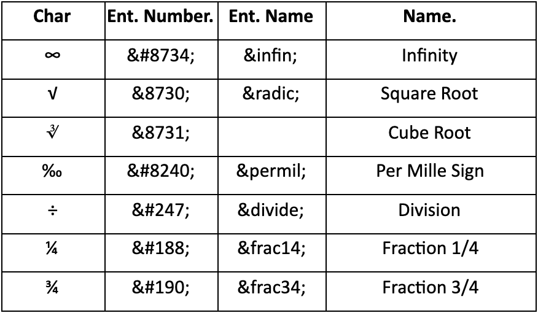

Symboler er også en form for entities, som kan sættes ind ved hjælp af en bestemt kode. Som sagt er nogle karakterer i HTML reserveret til, at skulle udføre en funktion. Derfor vil din kode ikke give mening, hvis du bare skriver disse karakterer ind i en tekst, i en text-editor. Man er derfor nødt til at gøre brug af et entity number, hvis man vil vise disse tegn i browseren. “<” og “>” vil man f.eks. ikke bare kunne skrive som en del af sin tekst, da tekst-editoren vil tro man starter eller slutter en bid kode. Nogle af dem har vi snakket om, som fx. Ampersand, men der er mange andre symboler, som er reservered i tekst-editoren.
Det er dog ikke alle symboler, som er reserverede i tekst-editoren. Andre kan man bare ikke skrive på et normalt tastatur. Det kan fx. være nogle matematiske tegn, som ikke kan skrives på et normalt tastatur. Fx. uendelighedssymbolet (∞), eller kvadratrodstegnet (√).
Nederst på siden er der to lister over, nogle af de mest anvendte symboler og deres entity numbers/names.
Eksempler på koden for nogle af de reserverede symboler.